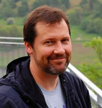
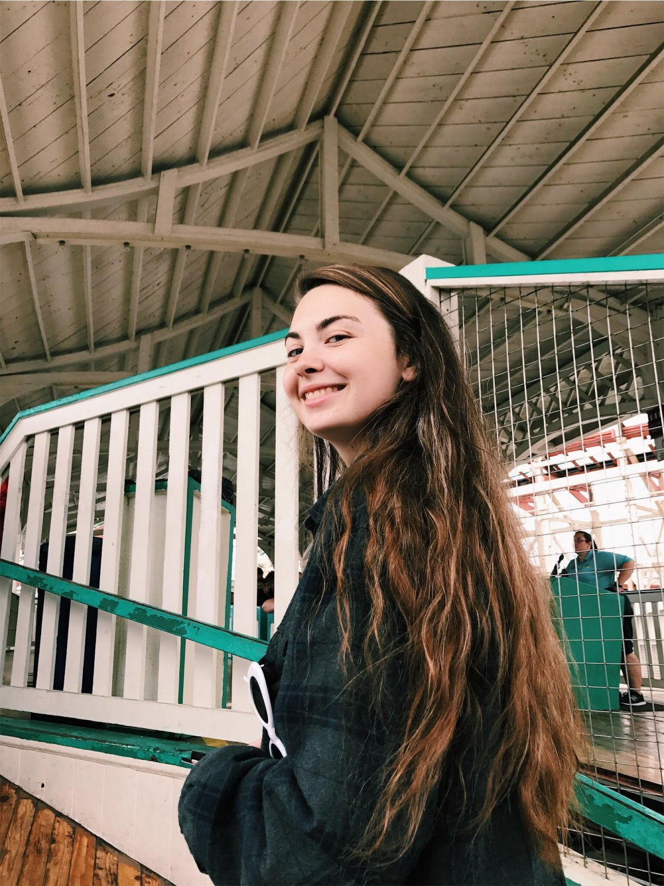
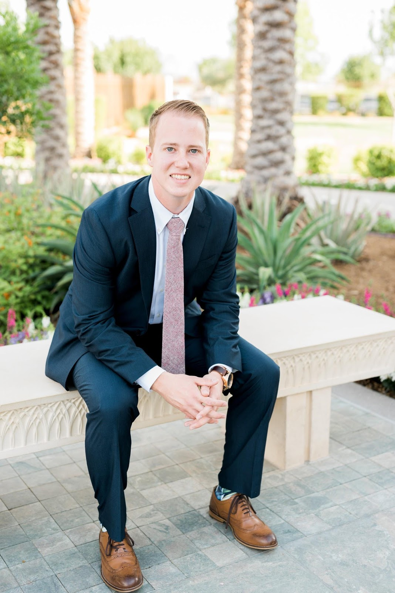

About us
It's not an app. It's an experience.
Arizona State University was founded in 1885. Every year, thousands of people around the world come to ASU and start their brand-new college life. One of the important parts is to get familiar with this campus by taking a campus tour.
Sadly, over the past 133 years, the way people take campus tour has never been changed at all. Although there's abundant information on the Internet, there's no interaction between browsing webpage to get information and walking through the campus, the buildings, and the facilities. Students need a convenient and interactive way to get to know and access all the resources on campus.
Introducing the Herberger Experience app, a new way to take a campus tour at ASU Herberger Institute of Design and the Arts with an Augmented Reality experience.
Our mission is to change the way we take the campus tour. Say goodbye to the typical campus tour. Immerse yourself in the friendly user interface with interactive AR and video experience, and find out your new path of study.
Our Team
This is a Digital Culture capstone project for 2017 ~ 2018 academic year. Learn more about the Digital Culture program offered by ASU HIDA.
Who's idea?
This was a capstone topic originally purposed by Loren Olson, a professor from ASU School of Arts, Media and Engineering.
Starting the Fall 2017 semester, Junshu Liu, Annie Norenberg, and Stephen Moyer (graduated December 2017) joined this project with professor Loren Olson. The next semester, two new members join us, Trevor McLaws and Logan Park, and we decided to go for a completely different direction.
Division of Labor
Junshu Liu. He is a Digital Culture major with a focus on Media Processing. He is the project manager and the primary web designer and developer for both the front-end design for this site and the development in ar.js and A-Frame. Besides, he is working with Annie on our design tasks. He is also working on the faculties and facilities information for the School of Arts, Media and Engineering.
Annie Norenberg. She is also majoring Digital Culture with a concentration in Design. She is the major designer for this project. Her works include the design of branding, the AR-code marker, posters and other marketing materials. She is also working with Junshu on improving the design of this website.
Trevor McLaws. He is studying Interdisciplinary Studies from ASU School of Integrative Sciences & Arts. He is working on 3D modeling and helping with the AR development. He is also responsible for administrative and organizing for our team.
Logan Park. He is a Digital Culture student with a focus on Film. He is working on filming, creating our video and 360-degree video contents. He is also responsible for part of our marketing materials by making videos.
Our Plan
The Herberger Experience project is currently in progress.
Starting March 12, we will start publishing our project to the public for user testing and feedback, while updating and improving the project at the same time. We will also start marketing the Herberger Experience product through posters on campus and social media. (Twitter account available Late March.)
On April 27, we will demo our product during the Spring 2018 Digital Culture Showcase.
Our graduation commencement will be on May 7, 2018. Before we graduated, we will talk with our mentor Loren about continuing running and maintenance of this project by recruiting future students. We will come with a full instruction and documentation by earlier this May.
Special Thanks
The success of this capstone project couldn't be accomplished without all of these faculties and students' help and support.
Loren Olson. As a mentor, he helped us a lot from the construction of ideas at the beginning to the completion of this product.
Kimberlee Swisher, Grisha Coleman, and Christian Ziegler, Spring 2018 capstone instructor.
Kayla Elizondo, Education Coordinator of School of Arts, Media and Engineering. She gave us a lot of valuable advice for our project.
Jerome Etienne, the creator of ar.js.
The Mozilla VR Team, the creator of A-Frame.
Rafael Zamora. Rafael is a Computer Science student. During the Spring Break, he helped Junshu with some crucial technical difficulties on ar.js and A-Frame.
Contact us
Our Users & Customers
We treasure your advice and feedback. You're welcomed to contact us with your valuable feedback to make our product better.
News, Press & Media
We also welcome any press & media for contacting us if you need more information and details.
Companies, Clubs & Organizations
Any organization or company are also welcomed to reach us out for business inquiries, special events/fairs, keynotes/speaker series, and collaboration.
Please contact us through email. We will reply you in 1~2 business days.
Or, reach us out directly.
- Junshu Liu Junshu.Liu@asu.edu
- Annie Norenberg Anne.Norenberg@asu.edu
- Trevor McLaws tmclaws1@gmail.com
- Logan Park lepark@asu.edu
- Loren Olson Loren.Olson@asu.edu
Last updated: March 21, 2018